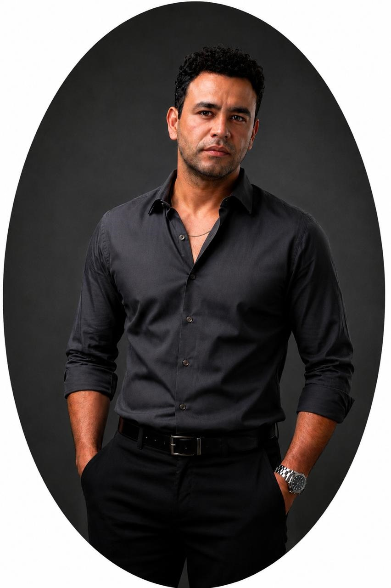

Cómo se mueven las personas y las mercancías.
Infraestructura vial y transporte: tractocamiones, autobuses y taxis compartiendo una misma red. Las decisiones sobre ella definen seguridad, tiempos y costos.
JOSÉ FRANCISCO ROMERO DÍAZ
Una práctica entre infraestructura, energía y paisaje para convertir problemas complejos en decisiones claras.
INICIAR
Infraestructura vial y transporte: tractocamiones, autobuses y taxis compartiendo una misma red. Las decisiones sobre ella definen seguridad, tiempos y costos.
Generación, transmisión y eficiencia: de los parques eólicos y solares a las líneas que llevan la energía hasta la ciudad, con la mirada puesta en la transición.
Análisis del espacio construido y del paisaje para convertir problemas complejos en decisiones claras: dónde se vive, cómo se llega y qué se comparte.